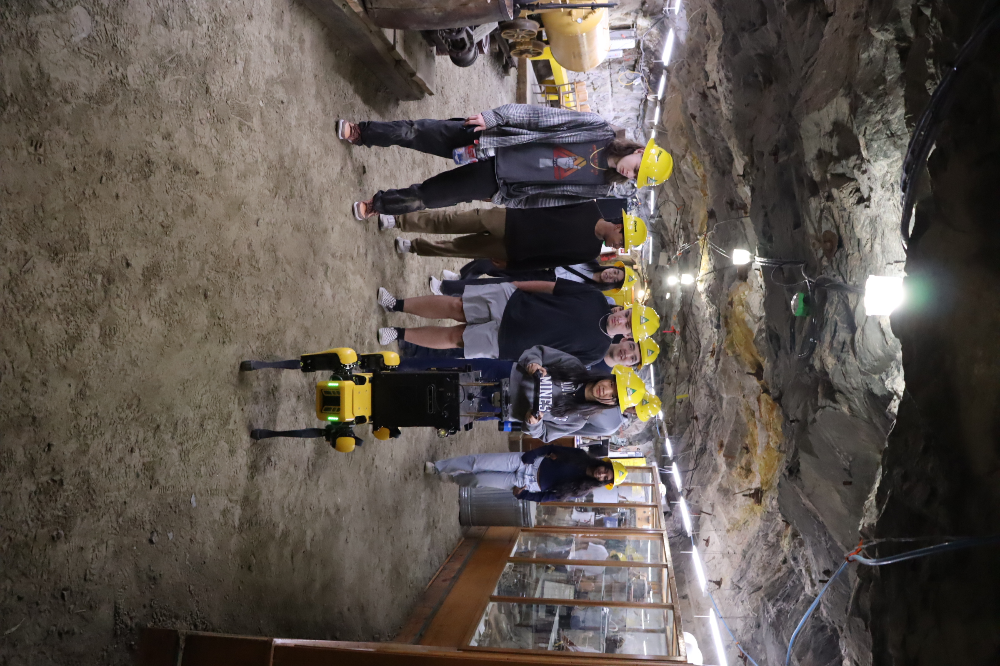
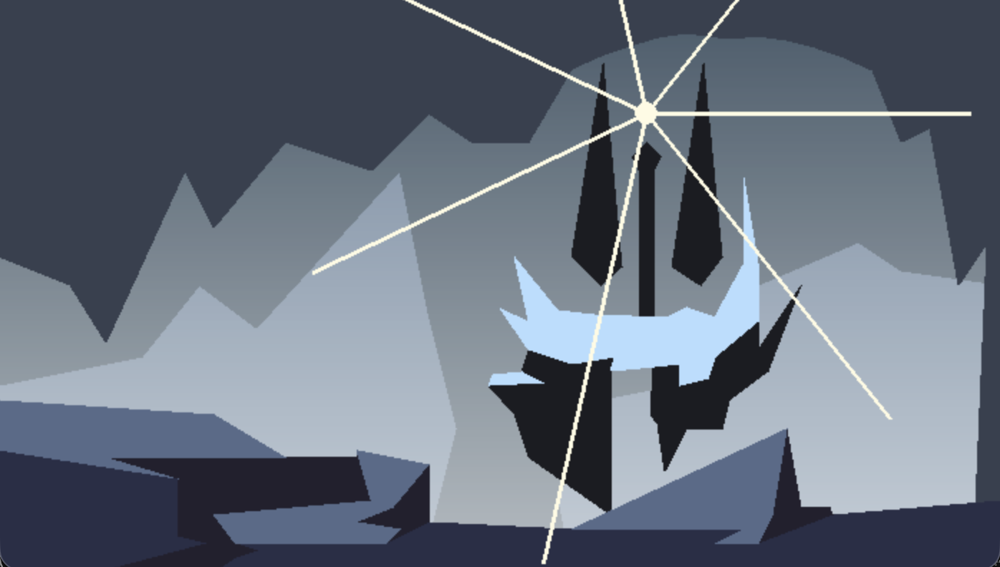
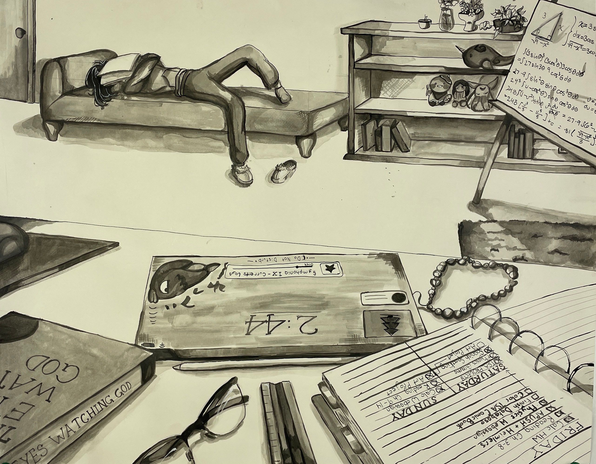
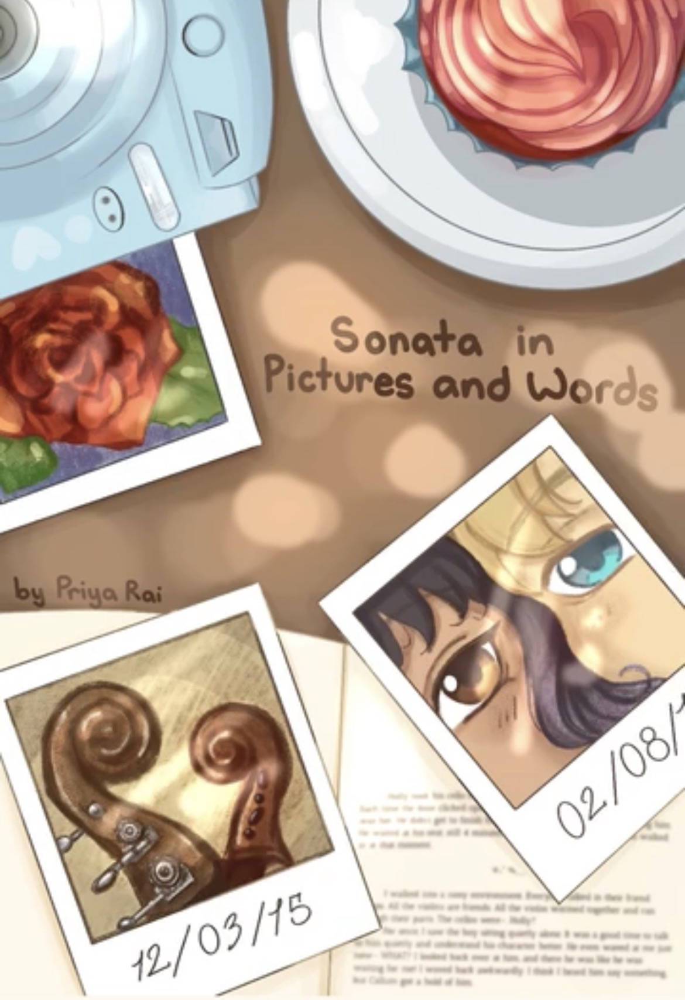

ART
Projects that build my identity.
From research and computing to visual-making and storytelling, these two paths shape the questions I choose to explore.

ART
AP Computer Science Principles
I took this course in my junior year of highschool. I was able to refresh my understanding of technical terms and python programming. Our class would often requires us to build projects that strengthen our skills in creating classes, methods, iterations, etc. and prepare us for the AP test.

ART
FINE ART
Art has been a passion of mine since a young age. However, I like to keep it as a hobby, rather than something I would pursue professionally. It's a form of exression, ad as I move into higher levels of art, the prompts become more open ended to where the student can interpret their own answers. On top of that, it is relaxing, and the hobby I can count on to always be expressive exciting.
ART
LITERATURE
A recent hobby I picked up was writing. Storybuilding is exciting because of the way you are allowed to analyze the characters you make and create nuances in their personality. My first book, "Sonata in Pictures and Words", is set to be published in December 2026 as an ode to my birthday and an important date for the story.
